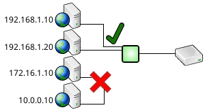
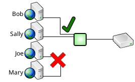
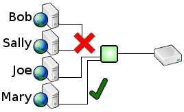

High Availability |
High Availability |  Contents | Data Translation
Contents | Data Translation 
Security Features
SQL Relay offers several features to enhance security.
Front-End Encryption and Secure Authentication
When configured to use the SQLRClient protocol (the default), SQL Relay supports Kerberos and Active Directory Encryption and Authentication and TLS/SSL Encryption and Authentication between the SQL Relay client and SQL Relay server.
When configured to use the MySQL or PostgreSQL protocols, SQL Relay supports TLS/SSL encryption and authentication between the SQL Relay client and SQL Relay server. See MySQL TLS/SSL Encryption and Authentication and PostgreSQL TLS/SSL Encryption and Authentication for details.
When configured to use the Firebird protocol, SQL Relay does not support TLS/SSL encryption or authentication between the SQL Relay client and SQL Relay server. (Firebird's own wire encryption, a separate feature negotiated within the Firebird protocol itself, is a different matter - see Wire Encryption under Firebird Protocol.)
When configured to use the TDS protocol, SQL Relay supports TLS/SSL encryption and authentication between the SQL Relay client and SQL Relay server. See TDS TLS/SSL Encryption and Authentication for details.
When configured to use the Oracle protocol, SQL Relay - as with the Firebird protocol - does not support TLS/SSL encryption or authentication between the SQL Relay client and SQL Relay server. (Oracle's own native network encryption and crypto-checksumming, a separate feature negotiated within the Oracle protocol itself, is a different matter - see Limitations under Oracle Protocol.)
Back-End Encryption and Secure Authentication
SQL Relay also supports TLS/SSL Encryption and Authentication between the SQL Relay server and some databases.
The configuration details differ between databases though.
Oracle
Modern Oracle databases support the following TLS/SSL features:
- Encryption
- Certificate Validation
- Distinguished Name Validation
- Mutual Authentication
Configuring SQL Relay to use TLS/SSL encryption and authentication with an Oracle database involves:
- Configuring SQL*Net on the database server to support secure connections
- Configuring SQL*Net on the SQL Relay server to support secure connections
- Telling SQL Relay to use an oracle_sid that refers to a secure connection
Most of the configuration on the SQL Relay server is done outside of SQL Relay itself.
Configuring SQL*Net involves setting up Oracle Wallets, which is a relatively complex process. See Oracle TLS/SSL Encryption Tutorials for more information. Once that is done though, the SQL Relay configuration is relatively simple.
In this example, oratls refers to a TLS/SSL-secured entry in the tnsnames.ora file (usually $ORACLE_HOME/network/admin/tnsnames.ora):
<?xml version="1.0"?>
<instances>
<instance id="example" dbase="oracle">
<connections>
<connection string="user=scott;password=tiger;oracle_home=/u01/app/oracle/product/12.1.0;oracle_sid=oratls"/>
</connections>
</instance>
</instances>
In this example, there is no tnsnames.ora file, so the oracle_sid is set directly to a tnsnames-style expression that describes a TLS/SSL-secured connection:
<?xml version="1.0"?>
<instances>
<instance id="example" dbase="oracle">
<connections>
<connection string="user=scott;password=tiger;oracle_sid=(DESCRIPTION = (ADDRESS = (PROTOCOL = TCPS)(HOST = examplehost)(PORT = 2484)) (CONNECT_DATA = (SERVER = DEDICATED) (SERVICE_NAME = ora1)))"/>
</connections>
</instance>
</instances>
Note the TCPS protocol and port 2848. Also note that the SERVICE_NAME is still set to ora1, rather than oratls.
This example adds distinguished name validation:
<?xml version="1.0"?>
<instances>
<instance id="example" dbase="oracle">
<connections>
<connection string="user=scott;password=tiger;oracle_sid=(DESCRIPTION = (ADDRESS = (PROTOCOL = TCPS)(HOST = examplehost)(PORT = 2484)) (CONNECT_DATA = (SERVER = DEDICATED) (SERVICE_NAME = ora1)) (SECURITY = (SSL_SERVER_CERT_DN = "CN=examplehost.yourdomain.com")))"/>
</connections>
</instance>
</instances>
In this case, the database server's certificate is expected to present the distinguished name: CN=examplehost.yourdomain.com
Microsoft SQL Server (via FreeTDS)
Modern Microsoft SQL Server databases support the following TLS/SSL features:
- Encryption
- Certificate Validation
- Common Name Validation
Microsoft SQL Server does not support Mutual Authentication over TLS/SSL.
Configuring SQL Relay to use TLS/SSL encryption and authentication with a Microsoft SQL Server database via FreeTDS involves:
- Installing a certificate and key on the database server
- Configuring FreeTDS on the SQL Relay server to support secure connections
- Telling SQL Relay to use a FreeTDS server entry that refers to a secure connection
Modern Microsoft SQL Server databases support encryption by default, and enable it upon request. However, a certificate must be installed on the database server to support authentication. This process can be tricky because SQL Server places some specific requirements on the certificate:
- The common name MUST match the fully qualified domain name of the database server (host name + primary DNS suffix).
- ...but Windows servers are commonly configured without a primary DNS suffix.
- The Enhanced Key Usage property MUST include Server Authentication.
- Or, in openssl terms: the extendedKeyUsage extension must include serverAuth in the extfile used to generate the certificate signing request.
See TLS/SSL Encryption with MS SQL Server and FreeTDS for more information.
Most of the configuration on the SQL Relay server is done outside of SQL Relay itself, in the freetds.conf file (usually /etc/freetds.conf or /usr/local/etc/freetds.conf).
In this example, FreeTDS is configured to require an encrypted connection to the database:
[FREETDSSERVER] host = examplehost port = 1433 tds version = 7.1 client charset = UTF-8 encryption = require
Note that the tds version is 7.1 or higher. Version 7.0 doesn't support encryption.
In this example, FreeTDS is also configured to validate the database server's certificate against the CA cert /etc/ca.pem (but does not validate the common name):
[FREETDSSERVER] host = examplehost port = 1433 tds version = 7.1 client charset = UTF-8 encryption = require ca file = /etc/ca.pem check certificate hostname = no
In this example, FreeTDS is also configured to validate that the common name in the database server's certificate matches the database server's host name:
[FREETDSSERVER] host = examplehost.yourdomain.com port = 1433 tds version = 7.1 client charset = UTF-8 encryption = require ca file = /etc/ca.pem check certificate hostname = yes
Note that the host parameter has been updated to specify a fully qualified domain name. This is the value that the common name will be compared to.
The SQL Relay configuration is no different than the configuration for an insecure connection. In this example, FREETDSSERVER refers to the FreeTDS FREETDSSERVER entry configured above:
<?xml version="1.0"?>
<instances>
<instance id="example" dbase="freetds">
<connections>
<connection string="server=FREETDSSERVER;user=freetdsuser;password=freetdspassword;db=freetdsdb"/>
</connections>
</instance>
</instances>
MySQL/MariaDB
Modern MySQL/MariaDB databases support the following TLS/SSL features:
- Encryption
- Certificate Validation
- Common Name Validation
MySQL/MariaDB does not support Mutual Authentication over TLS/SSL.
Configuring SQL Relay to use TLS/SSL encryption and authentication with a MySQL/MariaDB database involves:
- Installing a certificate and key on the database server
- Configuring the SQL Relay server to support encryption and/or authentication
- Installing CA certs and revocation lists, as necessary, on the SQL Relay server
MySQL/MariaDB has supported TLS/SSL encryption and authentication since version 4.0, and encryption has been enabled by default since version 5.7. Older versions require host configuration to enable encryption though, and a certificate must be installed on the database server to support authentication. See Using Encrypted Connections for more information.
On the SQL Relay server, most of the configuration is done in the SQL Relay configuration file, in the string attribute of the connection tag.
The following example requires an encrypted connection:
<?xml version="1.0"?>
<instances>
<instance id="example" dbase="mysql">
<connections>
<connection string="user=mysqluser;password=mysqlpassword;host=mysqlhost;db=mysqldb;sslmode=require"/>
</connections>
</instance>
</instances>
The following connection string options are supported:
- sslmode - The ssl mode of the connection.
- disable - Don't use an encrypted connection.
- prefer - Use an encrypted connection if the database supports it.
- require - Require an encrypted connection.
- verify-ca - Require an encrypted connection and validate the server's certificate.
- verify-full - Require an encrypted connection, validate the server's certificate, and validate that the common name in the server's certificate matches the server's host name.
- tlsversion - the TLS version to use
- TLSv1
- TLSv1.1
- TLSv1.2
- Any more recent version of TLS, as supported by and enabled in the underlying MySQL/MariaDB client/server.
- If left blank or omitted, then the highest supported version is negotiated.
- sslkey - The full path name of an ssl key file (eg. /etc/certs/key.pem).
- sslcert - The full path name of an ssl certificate file (eg. /etc/certs/cert.pem).
- sslcipher - A list of permissable ciphers to use for SSL encryption. Only necessary if you want to restrict which cipers to use.
- sslca - The full path name of an SSL CA certificate to add to the list of trusted CA certificates to validate the host's certificate against (eg. /etc/certs/ca.pem).
- sslcapath - The full path name to a directory that contains a set of trusted SSL CA certificates to add to the list of trusted CA certificates to validate the host's certificate against (eg. /etc/certs/ca).
- sslcrl - The full path name of an SSL certificate revocation list (eg. /etc/certs/crl.pem).
- sslcrlpath - The full path name of a directory that contains a set of SSL certificate revocation lists (eg. /etc/certs/crl).
The following example also validates the database server's certificate against the CA cert /etc/ca.pem (but does not validate the common name):
<?xml version="1.0"?>
<instances>
<instance id="example" dbase="mysql">
<connections>
<connection string="user=mysqluser;password=mysqlpassword;host=mysqlhost;db=mysqldb;sslmode=verify-ca;sslca=/etc/ca.pem"/>
</connections>
</instance>
</instances>
The following example also validates that the common name in the database server's certificate matches the database server's host name:
<?xml version="1.0"?>
<instances>
<instance id="example" dbase="mysql">
<connections>
<connection string="user=mysqluser;password=mysqlpassword;host=mysqlhost.yourdomain.com;db=mysqldb;sslmode=verify-full;sslca=/etc/ca.pem"/>
</connections>
</instance>
</instances>
Note that the host parameter has been updated to specify a fully qualified domain name. This is the value that the common name will be compared to.
PostgreSQL
Modern PostgreSQL databases support the following TLS/SSL features:
- Encryption
- Certificate Validation
- Common Name Validation
- Mutual Authentication
Configuring SQL Relay to use TLS/SSL encryption and authentication with a PostgreSQL database involves:
- Configuring the database server to support secure connections
- Installing a certificate on the database server
- Configuring the SQL Relay server to support secure connections
- Installing a certificate on the SQL Relay server
- Configuring the database server to support encryption and/or authentication
- Installing certificate, key, CA certs, and revocation lists, as necessary, on the database server
- Configuring the SQL Relay server to support encryption and/or authentication
- Installing certificate, key, CA certs, and revocation lists, as necessary, on the SQL Relay server
PostgreSQL has supported TLS/SSL encryption and authentication since at least version 7.1. Enabling encryption and/or authentication is straightforward. See Secure TCP/IP Connections with SSL for more information.
On the SQL Relay server, most of the configuration is done by adding an sslmode parameter to the string attribute of the connection tag, in the SQL Relay configuration file.
The following example requires an encrypted connection:
<?xml version="1.0"?>
<instances>
<instance id="example" dbase="postgresql">
<connections>
<connection string="user=postgresqluser;password=postgresqlpassword;host=postgresqlhost;db=postgresqldb;sslmode=require"/>
</connections>
</instance>
</instances>
The following sslmode options are supported:
- disable - Don't use an encrypted connection.
- allow - Allow an encrypted connection if the database supports it.
- prefer - Use an encrypted connection if the database supports it.
- require - Require an encrypted connection.
- verify-ca - Require an encrypted connection and validate the server's certificate.
- verify-full - Require an encrypted connection, validate the server's certificate, and validate that the common name in the server's certificate matches the server's host name.
If sslmode is set to any value other than disable, then certificate and key files must be present as:
- ~/.postgresql/postgresql.crt
- ~/.postgresql/postgresql.key
(where ~/ refers to the home directory of the user that sqlrelay is configured to run as)
If sslmode is set to verify-ca or verify-full then a CA cert file must be present as:
- ~/.postgresql/root.crt
Optionally, a certificate revocation list may also be present as:
- ~/.postgresql/root.crl
See SSL Client File Usage for more information about file names and locations.
The following example also validates the database server's certificate (but does not validate the common name):
<?xml version="1.0"?>
<instances>
<instance id="example" dbase="postgresql">
<connections>
<connection string="user=postgresqluser;password=postgresqlpassword;host=postgresqlhost;db=postgresqldb;sslmode=verify-ca"/>
</connections>
</instance>
</instances>
The following example also validates that the common name in the database server's certificate matches the database server's host name:
<?xml version="1.0"?>
<instances>
<instance id="example" dbase="postgresql">
<connections>
<connection string="user=postgresqluser;password=postgresqlpassword;host=postgresqlhost.yourdomain.com;db=postgresqldb;sslmode=verify-full"/>
</connections>
</instance>
</instances>
Note that the host parameter has been updated to specify a fully qualified domain name. This is the value that the common name will be compared to.
Run-As User and Group
When a non-root user runs sqlr-start, the SQL Relay server runs as that user and as the primary group of that user.
When root runs sqlr-start, the SQL Relay server runs as a more secure user and group, usually nobody/nobody when built from source, or sqlrelay/sqlrelay when installed from packages.
However, the runasuser and runasgroup attributes can be used to control what user and group the SQL Relay server runs as.
<?xml version="1.0"?> <instances> <instance id="example" ... runasuser="exampleuser" runasgroup="examplegroup" ...> ... </instance> </instances>
There are several important considerations when setting runasuser/runasgroup:
- runasuser is only effective if sqlr-start runs as root.
- runasgroup only effective if sqlr-start runs as a member of the group, or by root.
- All SQL Relay configuration files, and any appropriate database configuration files (such as Oracle's tnsnames.ora and SAP/Sybase's interfaces file) must be readable by the runasuser/runasgroup. Otherwise various things will fail, most notably, dynamic scaling.
- SQL Relay must be able to write to "run" and "log" directories. However, when installed from packages, the /var/run/sqlrelay and /var/log/sqlrelay directories are owned by sqlrelay/sqlrelay and have fairly restrictive 755 permissions. Thus, the permissions on these directories must be manually changed if runasuser or runasgroup are set to any value other than "sqlrelay". This is not an issue if SQL Relay is built from source, and is not an issue on Windows.
IP Filtering
By default, clients from any IP address are allowed to connect to the SQL Relay srever. However, the deniedips and allowedips attributes can be used to restrict the set of IP addresses that clients can connect from.

The deniedips attribute can be configured with a regular expression indicating which IP address will be denied access. The allowedips attribute can also be configured with a regular expression to override the deniedips attribute.
For example, to deny all clients except clients connecting from the 192.168.2.0 and 64.45.22.0 networks:
<?xml version="1.0"?> <instances> <instance id="example" ... deniedips=".*" allowedips="(192\.168\.2\..*|64\.45\.22\..*)" .../> ... </instance> </instances>
Password Files
Password files enable you to store passwords in external files, rather than directly in the config file. Passwords can then be secured by setting a more restrictive set of permissions on the files containing the passwords than on the config file itself.
( NOTE: If runasuser/runasgroup are used, then password files must be readable by the runasuser/runasgroup. Otherwise various things will fail, most notably, dynamic scaling.)
Password files are supported by all userlist auth modules, including sqlrclient_userlist, mysql_userlist and postgresql_userlist, as well as in database connect strings.
To use password files, put each password in an external file, and enclose the full path of the file in square brackets as follows:
<?xml version="1.0"?>
<instances>
<instance id="example">
<auths>
<auth module="sqlrclient_userlist">
<user user="oneuser" password="[/usr/local/firstworks/etc/oneuser.pwd]"/>
<user user="anotheruser" password="[/usr/local/firstworks/etc/anotheruser.pwd]"/>
<user user="yetanotheruser" password="[/usr/local/firstworks/etc/yetanotheruser.pwd]"/>
</auth>
</auths>
<connections>
<connection string="user=ora1user;password=[/usr/local/firstworks/etc/ora1user.pwd];oracle_sid=ora1"/>
<connection string="user=ora2user;password=[/usr/local/firstworks/etc/ora2user.pwd];oracle_sid=ora2"/>
<connection string="user=ora3user;password=[/usr/local/firstworks/etc/ora3user.pwd];oracle_sid=ora3"/>
</connections>
</instance>
</instances>
In this example...
The contents of the file /usr/local/firstworks/etc/oneuser.pwd would be used to authenticate oneuser, and could contain the text:
onepassword
The contents of the file /usr/local/firstworks/etc/anotheruser.pwd would be used to authenticate anotheruser, and could contain the text:
anotherpassword
The contents of the file /usr/local/firstworks/etc/yetanotheruser.pwd would be used to authenticate yetanotheruser, and could contain the text:
yetanotherpassword
The contents of the file /usr/local/firstworks/etc/ora1user.pwd would contain the password for ora1user, perhaps containing the text:
ora1password
The contents of the file /usr/local/firstworks/etc/ora2user.pwd would contain the password for ora2user, perhaps containing the text:
ora2password
The contents of the file /usr/local/firstworks/etc/ora3user.pwd would contain the password for ora3user, perhaps containing the text:
ora3password
( NOTE: Trailing whitespace is ignored when passwords are stored in external files.)
If you would prefer not to use full pathnames inside of each set of square brackets, then you can specify a passwordpath attribute in the instance tag, as follows:
<?xml version="1.0"?>
<instances>
<instance id="example" passwordpath="/usr/local/firstworks/etc">
<auths>
<auth module="sqlrclient_userlist">
<user user="oneuser" password="[oneuser.pwd]"/>
<user user="anotheruser" password="[anotheruser.pwd]"/>
<user user="yetanotheruser" password="[yetanotheruser.pwd]"/>
</auth>
</auths>
<connections>
<connection string="user=ora1user;password=[ora1user.pwd];oracle_sid=ora1"/>
<connection string="user=ora2user;password=[ora2user.pwd];oracle_sid=ora2"/>
<connection string="user=ora3user;password=[ora3user.pwd];oracle_sid=ora3"/>
</connections>
</instance>
</instances>
In this case, the path /usr/local/firstworks/etc will be searched for the files oneuser.pwd, anotheruser.pwd, yetanotheruser.pwd, ora1user.pwd, ora2user.pwd, and ora3user.pwd.
Password Encryption
Password encryption enables you to store passwords in the configuration file in a manner that makes them not directly readable. Passwords for both SQL Relay users and database users may be encrypted.
Encryption and decryption are implemented by loadable modules. The passwordencryptions section of the configuration file indicates which modules to load, and attributes in the user and connection tags indicate which module to use with the password defined in that same tag.
For example, to use the rot module, which encrypts by performing a simple character rotation:
<?xml version="1.0"?> <instances> <instance ...> <passwordencryptions> <passwordencryption module="rot" id="rot13enc" count="13"/> </passwordencryptions> <auths> <auth module="sqlrclient_userlist"> <user user="sqlruser" password="fdyecnffjbeq" passwordencryptionid="rot13enc"/> </auth> </auths> <connections> <connection connectionid="db" string="user=oracleuser;password=benpyrcnffjbeq;..." passwordencryptionid="rot13enc"/> </connections> </instance> </instances>
The module attribute specifies which module to load.
Module configurations may have attributes and/or nested tags. How these are interpreted is module-specific.
In this example, the id and count attributes configure the rot module. "13" tells the module to rotate by 13 characters. The id attribute assigns this particular module configuration an id that will be referenced by user and connection tags. The id attribute is mandatory.
Note that the password in the user tag is encrypted (unencrypted, it would just be "sqlrpassword") and that the password in the string attribute of the connection tag is also encrypted (unencrypted, it would just be "oraclepassword"). A command line program (described below) is provided to encrypt passwords.
Note also that the passwordencryptionid attribute in both tags refers to the id of the module as set using the id attribute in the passwordencryption tag ( rot13enc ), not the module name ( rot ).
Password encryption modules may be "stacked". It is possible to load multiple modules and use each one with a different password. For example, you might want to use the rot module with a count of 13 for the SQL Relay password and a count of 10 for the database password.
<?xml version="1.0"?> <instances> <instance ...> <passwordencryptions> <passwordencryption module="rot" id="rot13enc" count="13"/> <passwordencryption module="rot" id="rot10enc" count="10"/> </passwordencryptions> <auths> <auth module="sqlrclient_userlist"> <user user="sqlruser" password="fdyecnffjbeq" passwordencryptionid="rot13enc"/> </auth> </auths> <connections> <connection connectionid="db" string="user=oracleuser;password=ybkmvozkccgybn;..." passwordencryptionid="rot10enc"/> </connections> </instance> </instances>
Encryption modules may be either two-way or one-way. Two-way encryption modules can both encrypt and decrypt a password. One-way encryption modules can only encrypt a password, not decrypt it.
As such, SQL Relay can use either one-way or two-way encryption to encrypt passwords for SQL Relay users. However, only two-way encryption can only be used to encrypt passwords for database users.
There is a further restriction when a client speaks one of the database protocols that authenticates with a challenge and a response. Those clients never send the password. They send a hash of it, computed with a salt the server supplied. To check that hash, SQL Relay has to compute the same hash from the configured password, which means it needs the configured password itself, and a one-way module cannot give it back. So a one-way password encryption cannot be used with a challenge/response method, and a listener configured that way will not authenticate anyone at all.
Two protocols are affected, and they choose the method differently:
- For the postgresql protocol, the listener chooses. The default is md5, which is challenge/response. Setting passwords="cleartext" on the listener makes clients send the password itself, which works with either kind of module. See Password Method in the PostgreSQL Protocol section.
- For the firebird protocol, the client chooses, by which item it puts the password in. fbclient sends the legacy hash, so in practice a one-way module will not authenticate a normal firebird client no matter how the listener is configured.
Use a two-way module for these listeners, or, for postgresql, configure the listener for cleartext passwords. Note that cleartext sends the password over the network as typed, so it should only be used with TLS or on a trusted network.
The command line tool sqlr-pwdenc is provided to help encrypt passwords for inclusion in the configuration file. Given an encryption module and password, it will print out the encrypted password.
sqlr-pwdenc [-config configfile] -id id -pwdencid passwordencryptionid -password password
- configfile - optional and refers to the configuration file
- id - the instance within the configuration file to look for the specified password encryption module definition
- passwordencryptionid - the id of the password encryption module to use
- password - the password to encrypt
For example:
$ sqlr-pwdenc -id example -pwdencid rot13enc -password oraclepassword benpyrcnffjbeq
The resulting string "benpyrcnffjbeq" can now be put in the configuration file as the password.
There is one final thing to note. SQL Relay command line client programs like sqlrsh and sqlr-import take an -id option. The -id option causes the program to open the configuration file and extract the port, socket, user and password from the specified instance. If the password is two-way encrypted then this will still work. However, if the password is one-way encrypted, then this will fail. So, when using the -id option with a one-way encrypted password, you must also use the -user and -password option.
For example, rather than just using:
sqlrsh -id example
You should use:
sqlrsh -id example -user sqlruser -password sqlrpassword
Currently, the following password encryption modules are available in the standard SQL Relay distribution:
- rot
- md5
- sha1
- sha256
- sha512
- des
Custom modules may also be developed. For more information, please contact dev@firstworks.com.
rot
The rot module is a two-way encryption module that performs a character rotation, similar to the popular ROT13 algorithm, though it can rotate by any amount specified in the count attribute, not just 13 and rotates digits as well as upper and lower-case characters.
<?xml version="1.0"?> <instances> <instance ...> <passwordencryptions> <passwordencryption module="rot" id="rot13enc" count="13"/> </passwordencryptions> <auths> <auth module="sqlrclient_userlist"> <user user="sqlruser" password="fdyecnffjbeq" passwordencryptionid="rot13enc"/> </auth> </auths> <connections> <connection connectionid="db" string="user=oracleuser;password=benpyrcnffjbeq;..." passwordencryptionid="rot13enc"/> </connections> </instance> </instances>
Since the ROT algorithm is two-way, it can be used to encrypt passwords for both SQL Relay users and database users.
md5
The md5 module is a one-way encryption module that encrypts the password using the MD5 algorithm. This module has no parameters.
<?xml version="1.0"?> <instances> <instance ...> <passwordencryptions> <passwordencryption module="md5" id="md5enc"/> </passwordencryptions> <auths> <auth module="sqlrclient_userlist"> <user user="sqlruser" password="b3553e9ee74fc545fb632f92e0a5f1ea" passwordencryptionid="md5enc"/> </auth> </auths> ... </instance> </instances>
Since the MD5 algorithm is one-way, it can be used to encrypt passwords for SQL Relay users, but not database users.
sha1
The sha1 module is a one-way encryption module that encrypts the password using the SHA-1 algorithm. This module has no parameters.
<?xml version="1.0"?> <instances> <instance ...> <passwordencryptions> <passwordencryption module="sha1" id="sha1enc"/> </passwordencryptions> <auths> <auth module="sqlrclient_userlist"> <user user="sqlruser" password="75e0c08dceb871fbf39ccf3049c6df1e60984d9a" passwordencryptionid="sha1enc"/> </auth> </auths> ... </instance> </instances>
Since the SHA-1 algorithm is one-way, it can be used to encrypt passwords for SQL Relay users, but not database users.
sha256
The sha256 module is a one-way encryption module that encrypts the password using the SHA-256 algorithm. This module has no parameters.
<?xml version="1.0"?> <instances> <instance ...> <passwordencryptions> <passwordencryption module="sha256" id="sha256enc"/> </passwordencryptions> <auths> <auth module="sqlrclient_userlist"> <user user="sqlruser" password="fb3869b97931d922ab4f6060ab4958f17dc05613f0ff6c584ce4000af5fab460" passwordencryptionid="sha256enc"/> </auth> </auths> ... </instance> </instances>
Since the SHA-256 algorithm is one-way, it can be used to encrypt passwords for SQL Relay users, but not database users.
sha512
The sha512 module is a one-way encryption module that encrypts the password using the SHA-512 algorithm. This module has no parameters.
<?xml version="1.0"?> <instances> <instance ...> <passwordencryptions> <passwordencryption module="sha512" id="sha512enc"/> </passwordencryptions> <auths> <auth module="sqlrclient_userlist"> <user user="sqlruser" password="04e39a2c05f60a6831e313393c5345b632d2734f42cb2a8c6bc36e9176c3bde865f0064c05a0fbc10377f56d0e23127fc15dd2a955fa6ded0e2e323ece8379e3" passwordencryptionid="sha512enc"/> </auth> </auths> ... </instance> </instances>
Since the SHA-512 algorithm is one-way, it can be used to encrypt passwords for SQL Relay users, but not database users.
des
The des module is a one-way encryption module that encrypts the password using the DES algorithm using a salt specified in the salt attribute. The salt is required and must be a 2 digit alphanumeric code.
<?xml version="1.0"?> <instances> <instance ...> <passwordencryptions> <passwordencryption module="crypt" id="cryptenc" salt="sr"/> </passwordencryptions> <auths> <auth module="sqlrclient_userlist"> <user user="sqlruser" password="nIdCgucqUQg" passwordencryptionid="cryptenc"/> </auth> </auths> ... </instance> </instances>
Since the DES algorithm is one-way, it can be used to encrypt passwords for SQL Relay users, but not database users.
aes128
The aes128 module is a two-way encryption module that performs AES128 (CBC) encryption/decryption.
<?xml version="1.0"?> <instances> <instance ...> <passwordencryptions> <passwordencryption module="aes128" id="aes128enc" key="000102030405060708090a0b0c0d0e0f"/> </passwordencryptions> <auths> <auth module="sqlrclient_userlist"> <user user="sqlruser" password="1f7be0255e24783696a1783114e28667320ecef9537b5da48c19dbfa793fbcaf" passwordencryptionid="aes128enc"/> </auth> </auths> <connections> <connection connectionid="db" string="user=oracleuser;password=153b3125b0ce225e06c3f61eb68a2b062eb6bdc17db4894620f8067cfec4c1bf;..." passwordencryptionid="aes128enc"/> </connections> </instance> </instances>
Since the aes128 algorithm is two-way, it can be used to encrypt passwords for both SQL Relay users and database users.
The key attribute of the passwordencryption element contains a hexidecimal representation of the 128 bit (16 byte) key. The password attribute of the user element, and password parameter of the string attribute of the connection element contain hexidecimal representations of the encrypted passwords.
Note that multiple runs of sqlr-pwdenc with the same key and password will generate different results each time. This is the correct behavior. The first 128 bits (16 bytes) of the encrypted password are the "initialization vector" - a randomly generated string used in conjunction with the key to encrypt/decrypt the password. This vector is generated each time sqlr-pwdenc is run. Successive runs of sqlr-pwdenc generate different initialization vectors, and thus different encrypted passwords.
aes192
The aes192 module is a two-way encryption module that performs AES192 (CBC) encryption/decryption.
<?xml version="1.0"?> <instances> <instance ...> <passwordencryptions> <passwordencryption module="aes192" id="aes192enc" key="000102030405060708090a0b0c0d0e0f1011121314151617"/> </passwordencryptions> <auths> <auth module="sqlrclient_userlist"> <user user="sqlruser" password="1dbdbd6e27d31b603c340e2c19e9ca9b09662e41b1f8fb23799af3f407be9da9" passwordencryptionid="aes192enc"/> </auth> </auths> <connections> <connection connectionid="db" string="user=oracleuser;password=344204e6dab4cd8e64d1003e222aa5d4b657ed34919f25cd97a9b663692dfe50;..." passwordencryptionid="aes192enc"/> </connections> </instance> </instances>
Since the aes192 algorithm is two-way, it can be used to encrypt passwords for both SQL Relay users and database users.
The key attribute of the passwordencryption element contains a hexidecimal representation of the 192 bit (24 byte) key. The password attribute of the user element, and password parameter of the string attribute of the connection element contain hexidecimal representations of the encrypted passwords.
As with aes128, the first 128 bits (16 bytes) of the encrypted password are the initialization vector, regenerated each time sqlr-pwdenc is run, so multiple runs with the same key and password will generate different results each time. This is the correct behavior.
aes256
The aes256 module is a two-way encryption module that performs AES256 (CBC) encryption/decryption.
<?xml version="1.0"?> <instances> <instance ...> <passwordencryptions> <passwordencryption module="aes256" id="aes256enc" key="000102030405060708090a0b0c0d0e0f101112131415161718191a1b1c1d1e1f"/> </passwordencryptions> <auths> <auth module="sqlrclient_userlist"> <user user="sqlruser" password="537001d4b8a1015193b7121c432c9984b2f20515a6e7eb6afed814dae048c465" passwordencryptionid="aes256enc"/> </auth> </auths> <connections> <connection connectionid="db" string="user=oracleuser;password=7499bf233960e024921d05bea214f3b4c1c05d61c9d086a46ccf52ee2ca7eed3;..." passwordencryptionid="aes256enc"/> </connections> </instance> </instances>
Since the aes256 algorithm is two-way, it can be used to encrypt passwords for both SQL Relay users and database users.
The key attribute of the passwordencryption element contains a hexidecimal representation of the 256 bit (32 byte) key. The password attribute of the user element, and password parameter of the string attribute of the connection element contain hexidecimal representations of the encrypted passwords.
As with aes128, the first 128 bits (16 bytes) of the encrypted password are the initialization vector, regenerated each time sqlr-pwdenc is run, so multiple runs with the same key and password will generate different results each time. This is the correct behavior.
Connection Schedules
Connection schedules enable the SQL Relay server to control when users are allowed to access the database.


Connection schedules are implemented by loadable modules. The schedules section of the configuration file indicates which modules to load and what parameters to use when executing them.
<?xml version="1.0"?> <instances> <instance ...> ... <schedules> <!-- allow these users during business hours --> <schedule module="cron_userlist" default="deny"> <users> <user user="dmuse"/> <user user="kmuse"/> <user user="imuse"/> <user user="smuse"/> </users> <rules> <allow when="* * * 2-5 8:00-11:59,13:00-16:59"/> </rule> </schedule> </schedules> ... </instance> </instances>
The module attribute specifies which module to load.
Module configurations may have attributes and/or nested tags. How these are interpreted is module-specific.
All schedule modules have an enabled attribute, allowing the module to be temporarily disabled. If enabled="no" is configured, then the module is disabled. If set to any other value, or omitted, then the module is enabled.
All schedule modules have a debug attribute. If debug="yes" is configured then debugging information is written to the destination of the debug logger module (if one is defined, see the debug logger module), or otherwise, to standard output. If debug="no" is configured, or if the debug attribute is omitted, then no debugging information is written.
Connection schedule modules can be "stacked". Multiple different modules may be loaded, and multiple instances of the same type of module, with different configurations, may also be loaded.
<?xml version="1.0"?> <instances> <instance ...> ... <schedules> <!-- allow these users during business hours --> <schedule module="cron_userlist" default="deny"> <users> <user user="imuse"/> <user user="smuse"/> </users> <rules> <allow when="* * * 2-5 8:00-11:59,13:00-16:59"/> </rule> </schedule> <!-- allow these users at any time --> <schedule module="cron_userlist" default="deny"> <users> <user user="dmuse"/> <user user="kmuse"/> </users> <rules> <allow when="* * * * *"/> </rule> </schedule> </schedules> ... </instance> </instances>
At startup, the SQL Relay server creates instances of the specified schedule modules and initializes them. When a client connects, the server passes the supplied credentials to each module, in the order that they were specified in the config file. Each module applies its rules to the specified user. If a module denies access to a user then the remaining modules are ignored. If the user makes it through all modules without being denies access, then the user is allowed access.
Currently, only the ''cron_userlist'' connection schedule module is available in the standard SQL Relay distribution. Custom modules may be developed though. For more information, please contact dev@firstworks.com.
cron_userlist
The cron_userlist module enables you to define a connection schedule for a list of users, using a cron-like syntax.
Note though, that the time-and-date fields have different meanings from traditional cron.
An example configuration follows.
<?xml version="1.0"?> <instances> <instance ...> ... <schedules> <!-- allow these users during business hours --> <schedule module="cron_userlist" default="deny"> <users> <user user="dmuse"/> <user user="kmuse"/> <user user="imuse"/> <user user="smuse"/> </users> <rules> <allow when="* * * 2-5 8:00-11:59,13:00-16:59"/> </rule> </schedule> </schedules> ... </instance> </instances>
In this example, the module denies access to all users by default, but then allows access to the dmuse, kmuse, imuse, and smuse users during business hours. In this case, business hours are defined as:
- every year
- every month
- every day of the month
- between days 2-5 (Monday-Friday) of the week
- between 8:00AM and 11:59AM and 1:00PM and 4:59PM
Another example configuration follows.
<?xml version="1.0"?> <instances> <instance ...> ... <schedules> <!-- deny these users during non-business hours --> <schedule module="cron_userlist" default="allow"> <users> <user user="dmuse"/> <user user="kmuse"/> <user user="imuse"/> <user user="smuse"/> </users> <rules> <deny when="* * * 2-5 00:00-7:59,12:00-12:59,17:00-23:59"/> <deny when="* * * 1,7 *"/> </rules> </schedule> </schedules> ... </instance> </instances>
In this example, the module allows access to all users by default, but then denies access to the dmuse, kmuse, imuse, and smuse users during non-business hours. In this case, non-business hours are defined as:
- every year
- every month
- every day of the month
- between days 2-5 (Monday-Friday) of the week
- between 12:00AM and 7:59AM
- between 12:00PM and 12:59PM
- between 5:00PM and 11:59PM
- on days 1 and 7 (Saturday and Sunday) of the week, at all hours
The users tag defines a list of users to apply the schedule to. It may contain any number of user tags.
The user tags support the following attributes:
- user - the name of a user or * meaning "all users"
If a user does not appear in this list then it is granted access at any time. If a user appears in the list then the schedule will be applied to that user.
The default attribute of the schedule tag defines the default rule.
- allow - allow access to the list of users unless they are denied access by the set of rules
- deny - deny access to the list of users unless they are allowed access by the set of rules
The rules tag defines the list of rules that modify the default behavior. It may contain allow or deny tags.
The allow and deny tags support the following attributes:
- when - the years, months, days of month, days of week, and times of day that the rule applies to
The format of the when attribute is cron-like. There are 5 fields, separated by spaces.
Note again though, that the time-and-date fields have different meanings from traditional cron.
The fields represent, in order:
- years
- months (where 1=January)
- days of the month
- days of the week (where 1=Sunday)
- times of day, in 24-hour format
In each field, ranges may be specified with a dash, and sets may be separated by commas. A * means "all possible values".
For example:
All day, every day, at any time of day:
* * * * *
All day, every month, on the 1st, 3rd through 5th, 8th, and 10th through 12th of the month:
* * 1,3-5,8,10-12 * *
Every day from 8:00AM through 11:59AM and 1:00PM through 4:59PM:
* * * * 8:00-11:59,13:00-16:59
Every day from 1:00PM to 4:00PM:
* * * * 13:00-16:00
All day, every Saturday:
* * * 6 *
All day, every day, in February and March:
* 2,3 * * *
Every day in February and March, from noon to 3PM:
* 2,3 * * 12:00-15:00
...and so on.
In general, the module works as follows:
- When a user connects, the module looks for the user in the list of users.
- If the user is not found then access is granted.
- If the user is found, then the default rule is applied.
- Each rule in the rules list is evaluated.
- If the rule doesn't apply to the current time, then it is ignored.
- If the rule does apply to the current time, then it is applied.
- Each rule may reverse the outcome the previous rules.
- When all rules have been applied, the user will have been allowed or denied access.
Query Filtering
Query Filter modules enable the SQL Relay server programs to accept some queries, and filter out other queries, not passing them along to the database.
Query filters are implemented by loadable modules. The filters section of the configuration file indicates which filter modules to load and what parameters to use when executing them.
<?xml version="1.0"?> <instances> ... <instance ...> ... <filters> <filter module="regex" pattern=" [0-9]*=[0-9]*" errornumbrer="100" error="regex filter violation"/> </filters> ... </instance> ... </instances>
The module attribute specifies which module to load.
Module configurations may have attributes and/or nested tags. How these are interpreted is module-specific.
All filter modules have an enabled attribute, allowing the module to be temporarily disabled. If enabled="no" is configured, then the module is disabled. If set to any other value, or omitted, then the module is enabled.
All filter modules have a debug attribute. If debug="yes" is configured then debugging information is written to the destination of the debug logger module (if one is defined, see the debug logger module), or otherwise, to standard output. If debug="no" is configured, or if the debug attribute is omitted, then no debugging information is written.
All filter modules have an when attribute as well, which determines when the filter is applied. If set to "before" then the module is executed before any query translations are executed. If set to "after", or omitted, then the module is executed after all query translations have been executed. See Query Translations for more information.
Filter modules can be "stacked". Multiple different modules may be loaded and multiple instances of the same type of module, with different configurations, may also be loaded.
<?xml version="1.0"?> <instances> ... <instance ...> ... <filters> <filter module="regex" pattern=" [0-9]*=[0-9]*"/> <filter module="regex" pattern="^(create)"/> <filter module="regex" pattern="^(drop)"/> <filter module="string" pattern="hugetable" ignorecase="yes"/> <filter module="string" pattern="badschema" ignorecase="yes"/> </filters> ... </instance> ... </instances>
At startup, the SQL Relay server creates instances of the specified filter modules and initializes them. When a query is run, the server passes the query to each module, in the order that they were specified in the config file. If a module filters out the query, then it isn't passed along to the next module, nor is it sent to the database, and the client program is told that the query failed.
When using query filters, it is helpful to use the normalize query translation too:
<?xml version="1.0"?> <instances> ... <instance ...> ... <querytranslations> <querytranslation module="normalize"/> </querytranslations> ... <filters> <filter module="regex" pattern=" [0-9]*=[0-9]*"/> </filters> ... </instance> ... </instances>
Pattern matching is substantially more reliable and efficient if the query has been normalized first. See Query Translations and the normalize translation for more information.
Currently, the following filter modules are available in the standard SQL Relay distribution:
- patterns
- regex
- string
Custom modules may also be developed. For more information, please contact dev@firstworks.com.
patterns
The patterns module matches the query against a specified set of patterns. Each pattern may be a string, case-insensitive string, or regular expression. Each pattern may also be matched against the entire query, only the parts of the query that are outside of quotes, or only the parts of the query that are contained within quotes. If the query matches, then it is filtered out.
The list of patterns is given by a set of pattern child tags. Each pattern tag may contain the following attributes.
- pattern - Required. The pattern to match.
- type - Optional. Defaults to "string". Valid values are "string", "cistring" (case insensitive string), and "regex" (regular expression).
- scope - Optional. Defaults to "query". Valid values are "query" (attempt to match against the entire query), "outsidequotes" (only match parts of the query not surrounded by single-quotes), and "insidequotes" (only match parts of the query surrounded by single-quotes).
- errornumber - Optional. Defaults to 0. The error number to return to the client if the query matches this filter.
- error - Optional. Defaults to an empty string. The error string to return to the client if the query matches this filter.
For example, with the following configuration...
<?xml version="1.0"?> <instances> ... <instance ...> ... <querytranslations> <querytranslation module="normalize"/> </querytranslations> ... <filters> <filter module="patterns"> <pattern type="regex" pattern="^(create)"/> <pattern type="regex" pattern="^(drop)"/> <pattern type="cistring" pattern="hugetable"/> <pattern type="string" pattern="badstring" scope="insidequotes"/> </filter> </filters> ... </instance> ... </instances>
These queries would be filtered out:
drop table mytable create table mytable (col1 int) select * from HugeTable select * from badstringtable where col1='badstring'
But these queries would not be:
insert into mytable values (1) select * from goodtable select * from badstringtable where col1='goodstring'
regex
The regex module matches the query against a specified regular expression pattern. If the query matches, then it is filtered out. This module is useful if you need to do a quick match, without the complexity of the patterns module.
In addition to the module attribute, each filter tag may contain the following attributes.
- pattern - Required. The pattern to match.
- errornumber - Optional. Defaults to 0. The error number to return to the client if the query matches this filter.
- error - Optional. Defaults to an empty string. The error string to return to the client if the query matches this filter.
For example, with the following configuration:
<?xml version="1.0"?> <instances> ... <instance ...> ... <querytranslations> <querytranslation module="normalize"/> </querytranslations> ... <filters> <filter module="regex" pattern=" [0-9]*=[0-9]*"/> </filters> ... </instance> ... </instances>
This query would be filtered out:
select * from mytable where column1=1 and 1=1
But this query would not be:
select * from mytable where column1=1
string
The string module matches the query against a specified string pattern. If the query matches, then it is filtered out. This module is useful if you need to do a quick match without the complexity of regular expressions or of the patterns module.
In addition to the module attribute, each filter tag may contain the following attributes.
- pattern - Required. The pattern to match.
- ignorecase - Optional. Defaults to "no". If set to "yes" then the comparison is case insensitive.
- errornumber - Optional. Defaults to 0. The error number to return to the client if the query matches this filter.
- error - Optional. Defaults to an empty string. The error string to return to the client if the query matches this filter.
For example, with the following configuration:
<?xml version="1.0"?> <instances> ... <instance ...> ... <querytranslations> <querytranslation module="normalize"/> </querytranslations> ... <filters> <filter module="string" pattern="hugetable" ignorecase="yes" errornumbrer="100" error="string filter violation"/> </filters> ... </instance> ... </instances>
This query would be filtered out:
select * from hugetable
But this query would not be:
select * from goodtable where column1=1
tag
The tag module matches queries in the same manner as the patterns module described above, and is configured similarly:
<?xml version="1.0"?> <instances> ... <instance ...> ... <moduledatas> <moduledata module="tag" id="tags"/> </moduledatas> ... <filters> <filter module="tag"> <pattern type="regex" pattern="^(create)" tag="create or drop query" moduledataid="tags"/> <pattern type="regex" pattern="^(drop)" tag="create or drop query" moduledataid="tags"/> <pattern type="cistring" pattern="hugetable" tag="hugetable query" moduledataid="tags"/> <pattern type="string" pattern="badstring" scope="insidequotes" tag="contains badstring" moduledataid="tags"/> </filter> </filters> ... </instance> ... </instances>
Note the moduledata tag defined prior to the filters tag. Moduledata modules basically allow one module to pass data to another. See Module Data for more details. The tag filter module interoperates with the tag moduledata module and requires an instance of it to work.
In the tag module, if the query matches the pattern, then instead of filtering it out so that it isn't executed, the query is "tagged" with the value specified in the tag attribute in the instance of moduledata specified by the moduledataid attribute. Other modules (translation modules, for example) could then query the specified moduledata for the presence or absence of this value, and act accordingly.
Currently, no open source modules make use of the tag filter/moduledata module, however custom modules may be developed. For more information, please contact dev@firstworks.com.